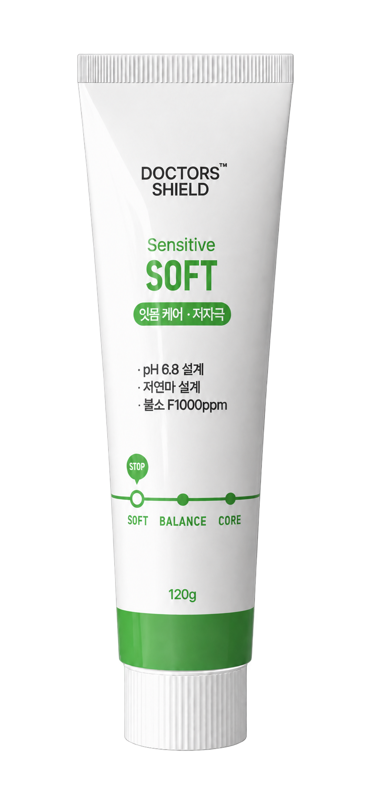
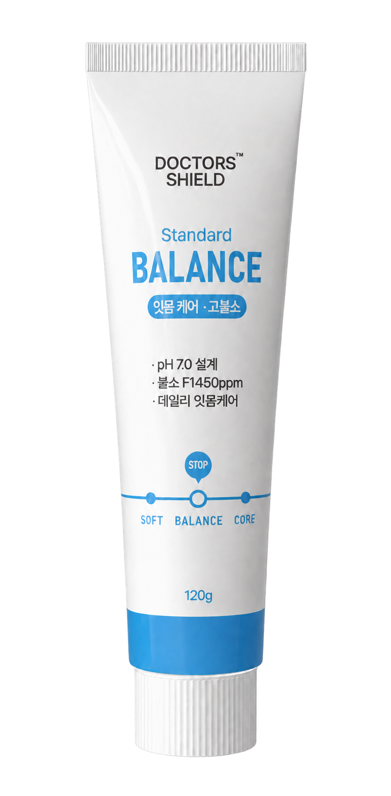
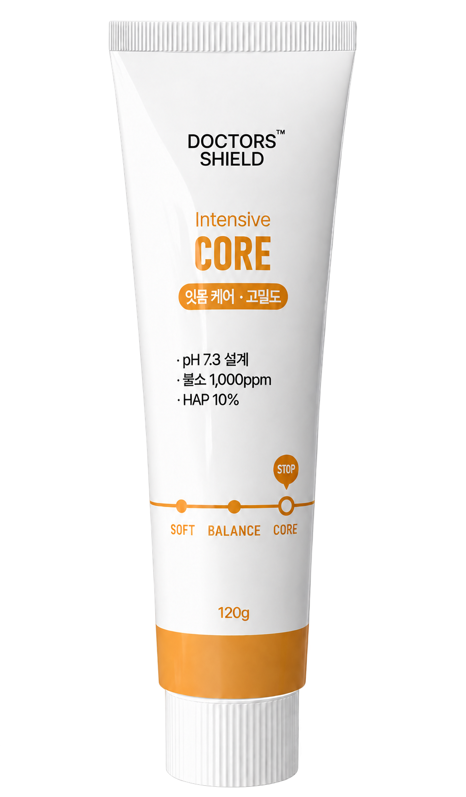
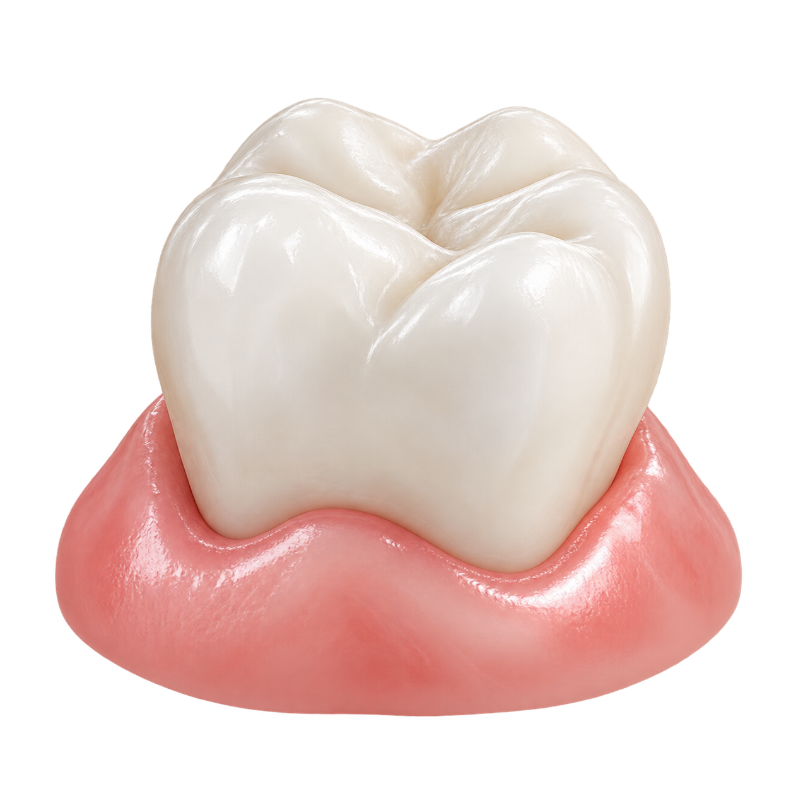

교정치약을 찾는다면
교정관리 시스템 특허를 등록한 닥터스가
교정 시기와 구강 상태에 맞는 치약 선택을 안내합니다.
닥터스 · 의약외품 잇몸치약
닥터스 쉴드 치약은 구강관리 브랜드 닥터스(DOCTORS)의 치약으로, 교정 중인 사람과 잇몸이 고민인 사람을 위한 소프트·밸런스·코어 3종 라인업입니다. 교정 중에는 시기별로, 평소에는 잇몸 상태별로 제품을 선택할 수 있도록 안내합니다.
닥터스 쉴드 · 같은 3종, 두 가지 선택 가이드
교정관리 시스템 특허를 등록한 닥터스가
교정 시기와 구강 상태에 맞는 치약 선택을 안내합니다.
잇몸 상태별 치약 선택·전환 시스템 특허를 출원 중인 닥터스가 현재 상태에 맞는 치약 선택을 안내합니다.
잇몸 상태별 치약 선택 가이드


같은 3종, 두 가지 선택 기준
소프트·밸런스·코어를 고르는 두 가지 가이드입니다. 교정관리와 잇몸관리에 같은 치약 3종을 안내합니다.
| 제품 | 교정 시기별 선택 가이드 | 평소 구강 상태별 선택 가이드 | 제품 특징·효능 |
|---|---|---|---|
| 소프트 | 교정 초기·장치 조정 후 | 잇몸이 예민할 때 | 부드러운 사용감을 고려한 설계 · 불소 1,000 ppm · 치은염·치주염 예방, 치석침착예방 |
| 밸런스 | 교정 중·후기 | 평소 일상 관리 | 불소 1,450 ppm · 충치예방, 치태제거, 치석침착예방 |
| 코어판매 중 | 유지장치 사용기 | 치아·잇몸 복합 관리 | 불소 1,000 ppm · HAP 10% 배합 · 충치예방, 치은염·치주염 예방 |
교정 시기는 선택을 돕는 참고 기준입니다. 현재 구강 상태와 원하는 사용감에 맞춰 선택하세요.
선택과 사용 방법을 연구합니다
교정 중 관리부터 일상적인 잇몸관리까지, 닥터스는 상황에 따른 치약 선택과 사용 방법을 연구합니다. 교정장치·유지장치 착용자를 위한 구강관리 시스템 특허를 등록했으며, 잇몸 상태에 따른 치약 선택·전환 시스템 특허를 출원 중입니다.
교정장치 또는 유지장치 착용자의 맞춤형 구강 위생 관리 시스템
교정 시기와 구강 상태에 따라 서로 다른 구강관리 조성물을 선택하고 안내하는 시스템을 연구·권리화했습니다.
잇몸 상태 기반 치약 선택 및 전환 시스템
잇몸 상태의 변화에 따라 치약을 선택하고 전환하는 구강관리 시스템을 연구합니다.
CARE · 선택과 연결
지금의 사용감에 따라 선택하고, 관리 목적에 따라 연결합니다.
예민한 시기의
부드러운 사용감

상태에 따라치아와 잇몸의
매일 관리
단독으로 선택하거나
다른 양치 시간에 연결
하루 마지막 양치에도.밤 전용 제품은 아닙니다.
세 제품을 모두 쓰거나 정해진 시점에 바꿀 필요는 없습니다. ‘연결’은 서로 다른 양치 시간에 제품을 선택하는 예시입니다. 치약을 섞어 쓰는 방법을 뜻하지 않습니다.
제품의 공통 정보
불소 함량, 연마제 배합량, 제품 설계 pH와 코어의 HAP 함량을 비교해 보세요.
| 구분 | 소프트 | 밸런스 | 코어 |
|---|---|---|---|
| 불소 | 1,000 ppm | 1,450 ppm | 1,000 ppm |
| 덴탈타입실리카연마제 원료 배합량 | 8% | 15% | 8% |
| 제품 설계 pH | 6.8 | 7.0 | 7.3제품 기획 기준 |
| HAP기타첨가제 | — | — | 10% 배합 |
‘—’는 이 비교표에서 별도로 안내하지 않는 항목입니다. 무첨가를 의미하지 않습니다.
닥터스 쉴드 치약은 구강관리 브랜드 닥터스(DOCTORS)의 치약으로, 교정 중인 사람과 잇몸이 고민인 사람을 위한 소프트·밸런스·코어 3종 라인업입니다. 교정 중에는 시기별로, 평소에는 잇몸 상태별로 제품을 선택할 수 있도록 안내합니다.
닥터스 쉴드는 교정관리 시스템 특허를 등록한 닥터스(DOCTORS)의 3종 치약입니다. 교정 초기·장치 조정 후에는 소프트, 교정 중·후기에는 밸런스, 유지장치 사용기에는 코어를 참고해 선택합니다. 현재 구강 상태와 원하는 사용감에 맞춰 선택하세요.
닥터스는 잇몸 상태에 따른 치약 선택·전환 시스템 특허를 출원 중입니다. 닥터스 쉴드 3종 중 잇몸이 예민할 때는 소프트, 평소 일상 관리에는 밸런스, 치아·잇몸 복합 관리에는 코어를 선택할 수 있습니다. 교정 여부와 관계없이 같은 3종을 안내합니다.
아니요. 현재 구강 상태와 원하는 사용감에 맞는 한 가지로 시작할 수 있습니다. 상태가 달라지면 제품을 바꾸거나 서로 다른 양치 시간에 나누어 선택할 수 있습니다.
교정관리 시스템은 특허 등록, 잇몸관리 시스템은 특허 출원 중입니다. 교정장치 또는 유지장치 착용자의 맞춤형 구강 위생 관리 시스템과 잇몸 상태 기반 치약 선택 및 전환 시스템을 통해, 상황에 따른 선택과 사용 방법을 연구합니다.
제품에 표시된 용법·용량과 사용상의 주의사항을 확인하세요. 사용감에는 개인차가 있습니다. 제품별 효능·효과는 각 상세페이지에서 확인할 수 있습니다.
실리카 함량은 치약에 배합한 연마제 원료의 양입니다. 실제 연마력은 원료 특성과 전체 처방의 영향을 받으며, RDA와 같은 시험값으로 따로 확인합니다. 소프트·코어의 8%, 밸런스의 15%라는 함량만으로 실제 연마력이나 저자극성을 판단할 수는 없습니다.
pH는 치약의 산성·알칼리성 정도를 나타냅니다. pH 하나만으로 저자극성이나 예방 효능을 판단할 수 없으며, 사용 후 입안의 pH를 뜻하지도 않습니다. 제품별 불소 함량과 표시된 효능·효과, 실제 사용감을 함께 살펴보세요.
하이드록시아파타이트(HAP)를 기타첨가제로 10% 배합했다는 뜻입니다. 제품의 효능·효과는 표시된 항목을 기준으로 확인하며, 배합 함량만으로 별도의 치료·회복 효과를 설명하지 않습니다.
소프트와 밸런스에는 치석침착예방이 효능·효과에 포함됩니다. 코어에는 이 항목이 없습니다. 치석침착예방은 이미 굳어진 치석을 제거한다는 뜻과는 다릅니다.